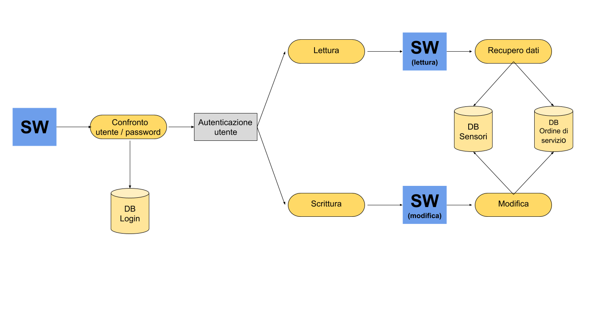

Case Study: Dustbin IoT
Intelligent system for managing the refuse collection of a Smart City.

School Thesis
Project Requirements
- Use high resolution sensors.
- Ensure energy consumption efficiency of embedded devices.
- Ensure real-time communication of network nodes.
- Web interface.
- Ensure reliable data to optimize the fuel economy of vehicles intended for collection.
- Ensure performance of tasks thus reducing the economic damage caused by the disservice.
- Low cost of prototyping.
- Ensure communications encryption.
- Ensure DB security (permissions and password encryption).
Open source
Project Overview
Following the investigations conducted by the media regarding the execution of the tasks assigned to the figure of the garbage collector within the municipal AMA (hereinafter referred to as the "client" or "company"), problems arise in the performance of the tasks assigned to employees in service with consequent discontinuity of the service itself throughout the area of competence and, specifically, in the context of waste collection. In particular, a part of the staff of the garbage collectors is only partially performing their duties, resulting outside the control of the company itself.
It should also be noted that the client currently uses a system based on QR Code technology which, by using applications for mobile devices on devices assigned to the operator, does not effectively detect the performance of the service. In fact, through the aforementioned apps, the garbage collector in service guarantees the collection of waste by interacting with QR codes present on the baskets, except then not completing the task assigned to him.
From these premises derives the customer's need for an effective control system in order to return to guaranteeing the continuity of the service, as well as the objectives of this project.
The Challenge
As part of the IoT-A specifications, it's neccesary to develop a prototype that contributes to the development of a smart solution for the optimization of waste collection tasks.
The Approach & Solution
This solution consists of a network of "sensor nodes" (ie embedded devices with detection sensor) positioned under each trash can of the city that communicate, through special gateways on the network, providing real-time data to a server. The data are also stored in a database with different authorization levels and can be consulted H24 via a web interface. Remote control of these nodes will also be allowed.
The Node-Red framework was used to create a conceptual prototype prior to the true development of the web application on the Django platform. The following video shows the result obtained in the first week.
The following image illustrates the main flow of the entire system. Blue indicates a program execution, yellow indicates a program action, and gray indicates a condition.
The Results
The result is a fully functional web application that solves the customer's needs H24 a day for a price of less than €50 per each garbage basket. The final product that I have carried out is open source and is available online as well as its prototype.
Testimonial
Programmatore brillante e con la determinazione nel sangue, Ariel è il membro ideale di qualsiasi team: contribuisce in modo decisivo durante tutte le fasi del progetto e porta a termine i propri task in modo impeccabile e puntuale. Questi fattori, uniti al livello di competenza raggiunto da Ariel nell'ambito della programmazione in python e dei database relazionali, hanno permesso lo sviluppo di un sistema IoT per la raccolta intelligente dei rifiuti urbani in tempi rapidissimi. Alla conclusione del progetto Ariel ha comunque continuato ad implementare da solo il prodotto creandone una vera e propria versione 2.0.

Want me to help with your project?
If you take on freelance work, you can use this section to prompt any potential clients to get in touch with you with their project requirements.